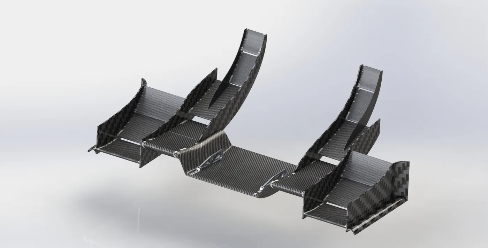
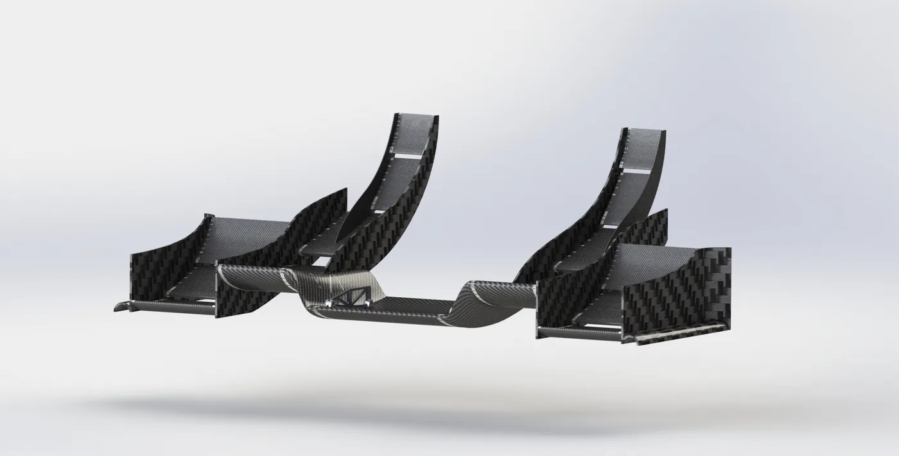
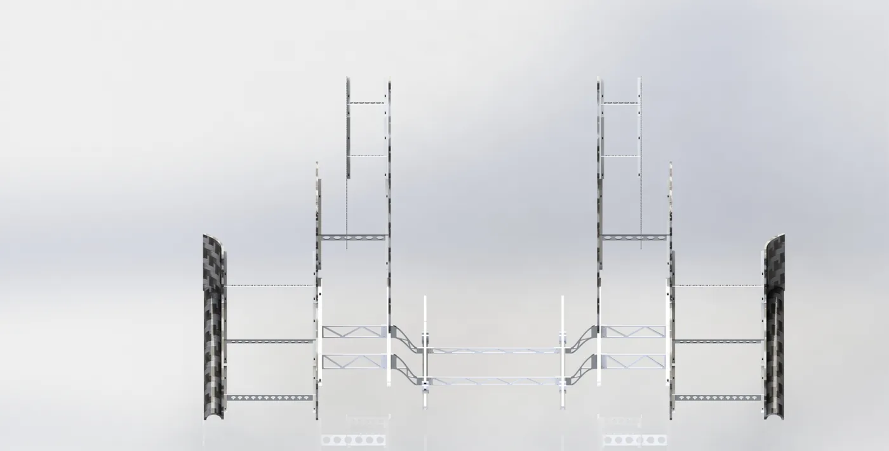
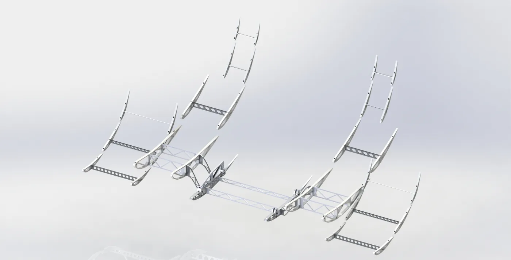
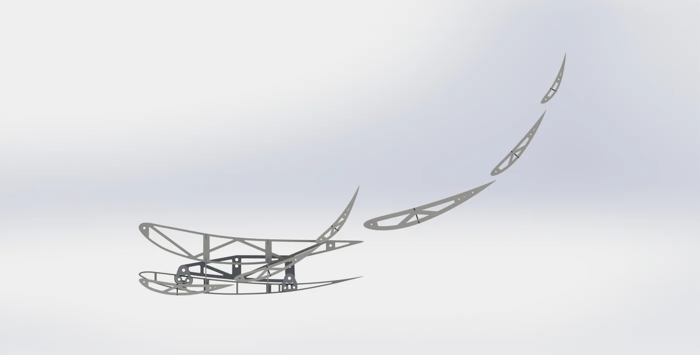
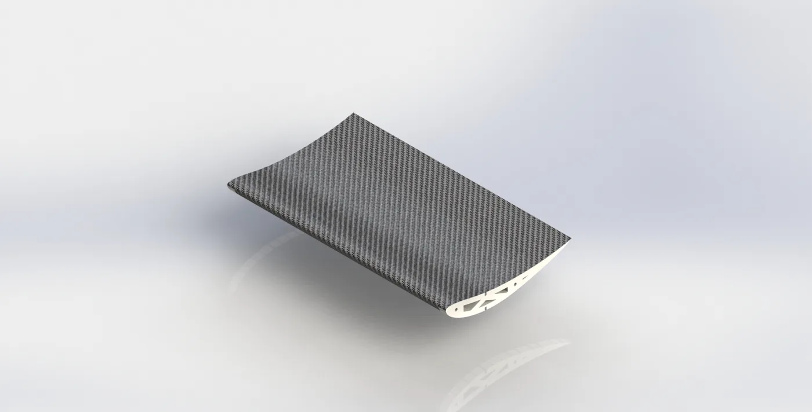
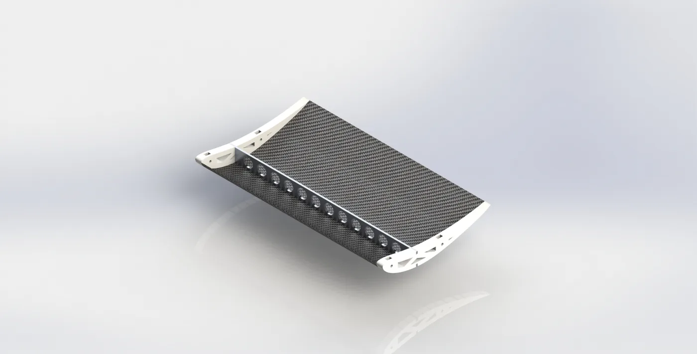

Falcon E Racing · Sri Lanka’s First Formula Student Car Project
Served as an Aerodynamics Engineer for Falcon E Racing, Sri Lanka’s first ever Formula Student car project, leading the aerodynamic package development for the team’s second vehicle, E2. My work covered CFD-based aerodynamic optimisation, composite manufacturing, wing construction, assembly, and vehicle integration.
Falcon E Racing will represent Sri Lanka at Formula Student Spain 2026, held at the Circuit de Barcelona-Catalunya from 1 to 7 August 2026. Taking E2 to Barcelona puts the car in front of an international judging panel at one of the Formula Student calendar’s flagship events, on the same Grand Prix circuit used by Formula 1. The competition is decided as much off the track as on it: alongside the dynamic events, teams defend their engineering decisions in the design event and justify their manufacturing and business cases to industry judges, so the reasoning behind the aerodynamic package is scrutinised as closely as its lap time. Competing against long-established European university teams is a significant milestone for a programme that began as Sri Lanka’s first Formula Student car project.
Formula StudentANSYS FluentCFDMOGAFour-Element Front WingCarbon FibreComposite ManufacturingVehicle Integration
Aerodynamic Design and Optimisation of a Four-Element Front Wing
A four-element front wing was aerodynamically designed and optimised for a Formula Student race car using two-dimensional steady-state CFD simulations in ANSYS Fluent. The design was developed within the regulation-defined 250 mm maximum height limit for aerodynamic devices positioned ahead of the front tyre. A limit-box geometry was created in SolidWorks to define the available design space and ensure that all four wing elements remained within the permitted region. The computational domain also included the front section of the tyre with a rotating-wall boundary condition to capture the interaction between the front-wing wake, ground effect, and tyre flow field more realistically.
The k–ω SST turbulence model was selected for the simulations. It blends two formulations so that each is used where it is strongest: the standard k–ω model is retained through the near-wall region, where it integrates directly to the wall and resolves the viscous sublayer without relying on wall functions, while the k–ε model is used in the far field, where k–ω alone is unduly sensitive to the freestream turbulence values specified at the inlet. Its shear-stress transport limiter also bounds the turbulent viscosity in adverse pressure gradients, which is where simpler two-equation models tend to over-predict momentum transfer and delay separation. That behaviour matters directly for a multi-element wing: the elements run at high loading with strong adverse pressure gradients across each slot gap, so the point at which the boundary layer separates governs the computed downforce. Resolving the near-wall layer rather than modelling it means the predicted separation, and therefore the lift and drag used to rank candidate geometries, can be trusted as a basis for comparison.
A staged and repetitive optimisation process was followed using Multi-Objective Genetic Algorithm parameter studies. First, the ground clearance and angles of attack of the wing elements were optimised. The element gaps were then optimised using the resulting configuration. With the improved gap values, the ground clearance and angles of attack were optimised again to further increase downforce. This process was repeated until the downforce converged with an optimum combination of element gaps, ground clearance, and angles of attack. The element overlaps were then introduced as additional design variables, and the same iterative optimisation procedure was continued until the highest-performing configuration was achieved.
The final optimised design generated a maximum downforce of 227.49 N/m with a drag force of 44.9 N/m, producing an aerodynamic efficiency ratio of CL/CD = 5.066. The design utilised the available 250 mm design box to maximise front-end downforce while maintaining aerodynamic efficiency. The wing elements were also positioned to direct airflow over the front tyre, reducing the low-energy wake behind it and limiting tyre-induced drag. The CFD results supported data-driven geometry refinement and produced a configuration with high downforce, controlled flow separation, and improved front-tyre wake management.
Structural Design and Fabrication of the Four-Element Front Wing
The structural members of the four-element front wing were designed and fabricated with the main objective of achieving a lightweight yet sufficiently stiff structure capable of maintaining the optimised aerodynamic shape under loading. Each aerofoil element consisted of three main structural components: upper and lower carbon-fibre skins, internal 3D-printed PLA ribs, and 3 mm laser-cut aluminium spars.
The carbon-fibre skins formed the external aerodynamic surface and carried the distributed aerodynamic pressure loads while providing bending and torsional stiffness. The aluminium spars extended along the span of each element and acted as the primary load-bearing members, resisting spanwise bending and transferring the aerodynamic loads toward the mounting points and endplates. The PLA ribs were positioned along the span to preserve the aerofoil profile, maintain the required gap and overlap geometry, support the thin carbon-fibre skins, and reduce the risk of local skin buckling. Slots and internal mounting features were incorporated into the rib designs to accommodate tightening bolts and provide accurate alignment during assembly.
The carbon-fibre skins were manufactured using a specially developed wet-layup process. Aerofoil-shaped moulds were first 3D printed using PLA and progressively sanded up to 1200-grit to obtain a smooth surface suitable for producing the aerodynamic outer profile. Both fast-curing and slow-curing resin systems were used during fabrication to speed up the process. A thin layer of fast-curing resin was initially applied to the mould to improve the surface finish of the final component. Once this layer had partially cured and reached a tacky condition, the carbon-fibre cloth was placed onto the mould. Slow-curing resin was then applied to fully impregnate the carbon fibres and provide sufficient working time for careful positioning and consolidation.
Following the wet layup, the complete mould and laminate assembly was vacuum-bagged. The vacuum pressure compressed the laminate against the mould, removed trapped air and excess resin, improved fibre-to-resin consolidation, and helped the skin accurately retain the required aerofoil shape during curing. After curing, the upper and lower carbon-fibre skins were removed from the moulds, trimmed, and assembled with the internal spars and ribs to form each complete aerofoil element.
The front-wing endplates were manufactured using PVC boards to provide a lightweight mounting and flow-guiding structure. Laser-cut honeycomb patterns were incorporated into the endplates to remove unnecessary material while retaining stiffness around the critical load paths. Because the PVC material alone could deform or become damaged around the bolted connections, laser-cut acrylic collars were installed at the mounting locations. These collars reinforced the bolt holes, distributed the clamping loads over a larger area, and provided a rigid interface between the aerofoil elements and the endplates.
The completed construction method combined carbon-fibre composite skins, aluminium spars, lightweight PLA ribs, and reinforced PVC endplates to produce a front-wing assembly with reduced mass, improved stiffness, accurate aerofoil geometry, and reliable structural connections.
Carbon FibreWet LayupVacuum BaggingSolidWorks







Structural Design and Fabrication of the Rear Wing
The rear wing was designed as a lighter and less structurally complex assembly than the front wing while still providing sufficient stiffness to maintain the required aerodynamic geometry under load. The complete assembly consisted of four aerofoil elements connected by two endplates. Each element was constructed using internal spars, ribs, and external skin panels, creating a lightweight semi-monocoque structure capable of transferring aerodynamic loads efficiently through the wing and into the vehicle mounting system.
The spars acted as the primary spanwise load-carrying members, resisting bending loads generated by the rear-wing downforce. The ribs maintained the aerofoil profile, supported the skin panels, and reduced the possibility of local skin deformation or buckling. They also ensured that the designed element spacing, alignment, and aerodynamic shape were preserved during assembly and operation.
The first aerofoil element carried the main mounting loads because the rear-wing mounting brackets were integrated directly into its rib structure. The outer ribs of this element were manufactured using 3D-printed PLA, providing a lightweight method of maintaining the aerofoil shape. In contrast, the two inner ribs were laser cut from 6 mm aluminium sheets to provide greater strength and stiffness around the mounting locations. These aluminium ribs formed the main structural interfaces between the aerodynamic elements and the mounting brackets, allowing the downforce and vibration loads to be transferred safely into the vehicle structure.
The rear-wing endplates were manufactured as lightweight sandwich panels. Each endplate consisted of two carbon-fibre skins bonded to a honeycomb-patterned PVC board core. The carbon-fibre skins provided high in-plane stiffness and a smooth aerodynamic surface, while the PVC core maintained the separation between the skins and increased the bending stiffness of the endplate. The honeycomb pattern removed unnecessary material while preserving the main structural load paths.
This sandwich construction significantly reduced the endplate mass compared with the previous design, which used a fully solid core material. At the same time, the increased distance between the carbon-fibre skins improved the section stiffness, allowing the endplates to maintain the correct alignment and spacing of the four aerofoil elements with minimal additional weight.
The completed rear-wing structure combined carbon-fibre skins, aluminium and PLA ribs, internal spars, and lightweight sandwich endplates. This construction provided an effective balance between low mass, structural stiffness, accurate aerofoil geometry, and reliable load transfer through the integrated mounting system.
The Falcon E Racing squad for the 2025/2026 term, drawn from the Faculty of Engineering at the
University of Moratuwa, is the team taking E2 to Formula Student Spain 2026. I serve as one of
its two aerodynamics engineers.